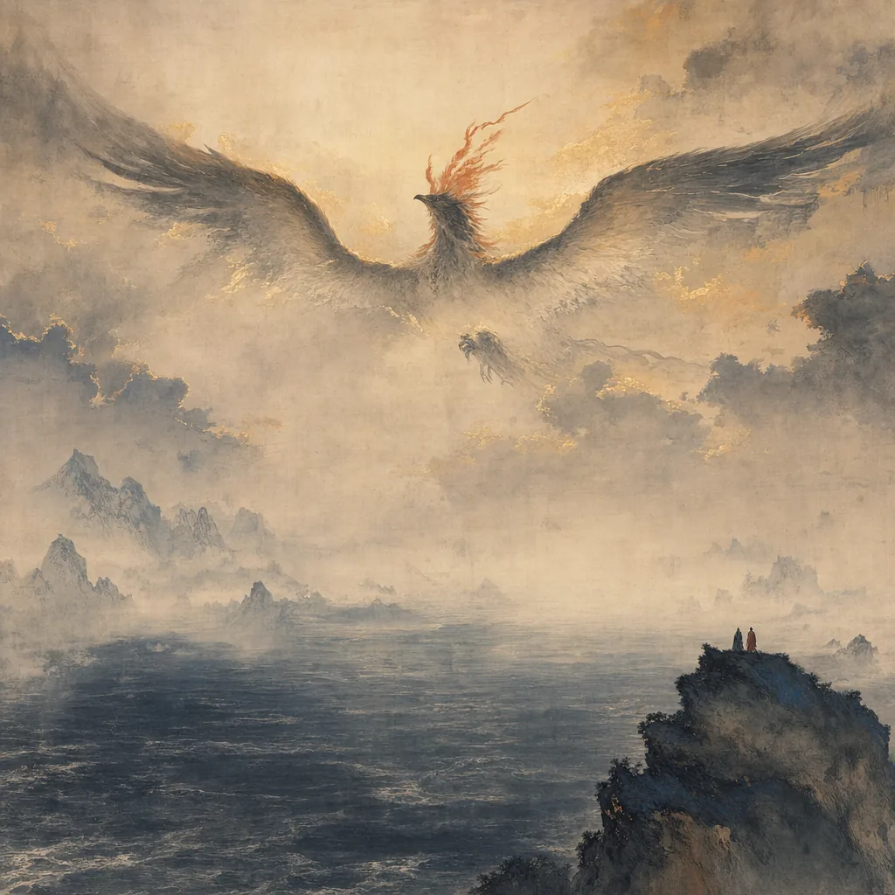
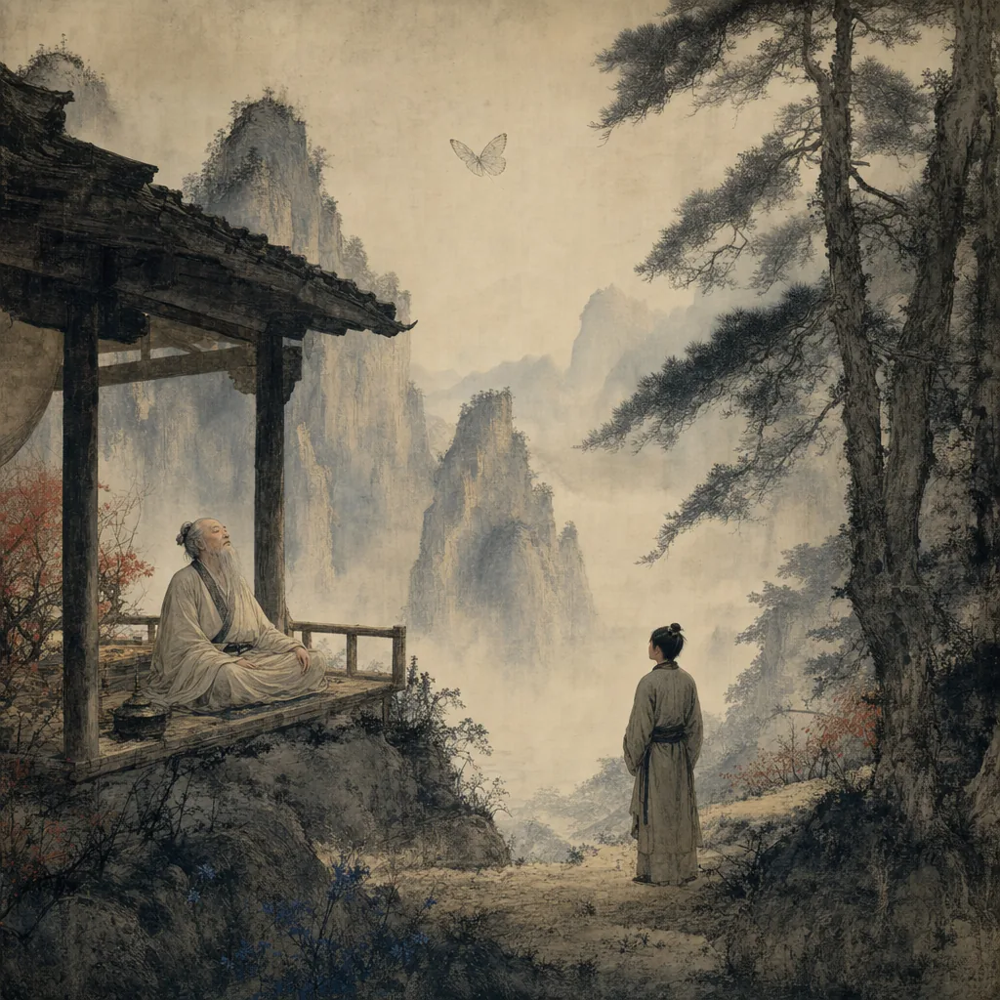
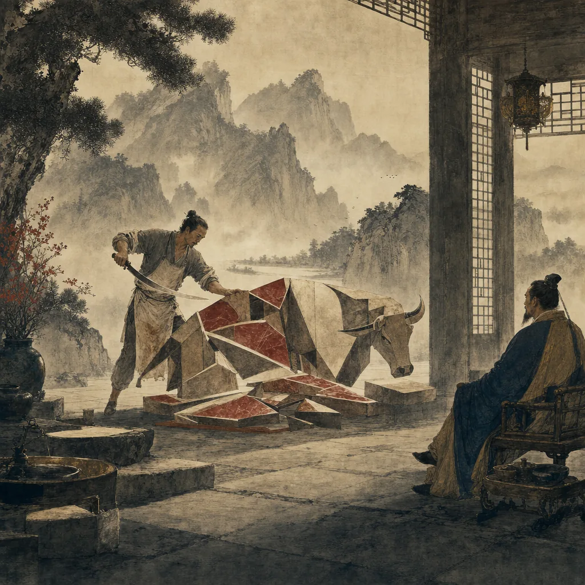
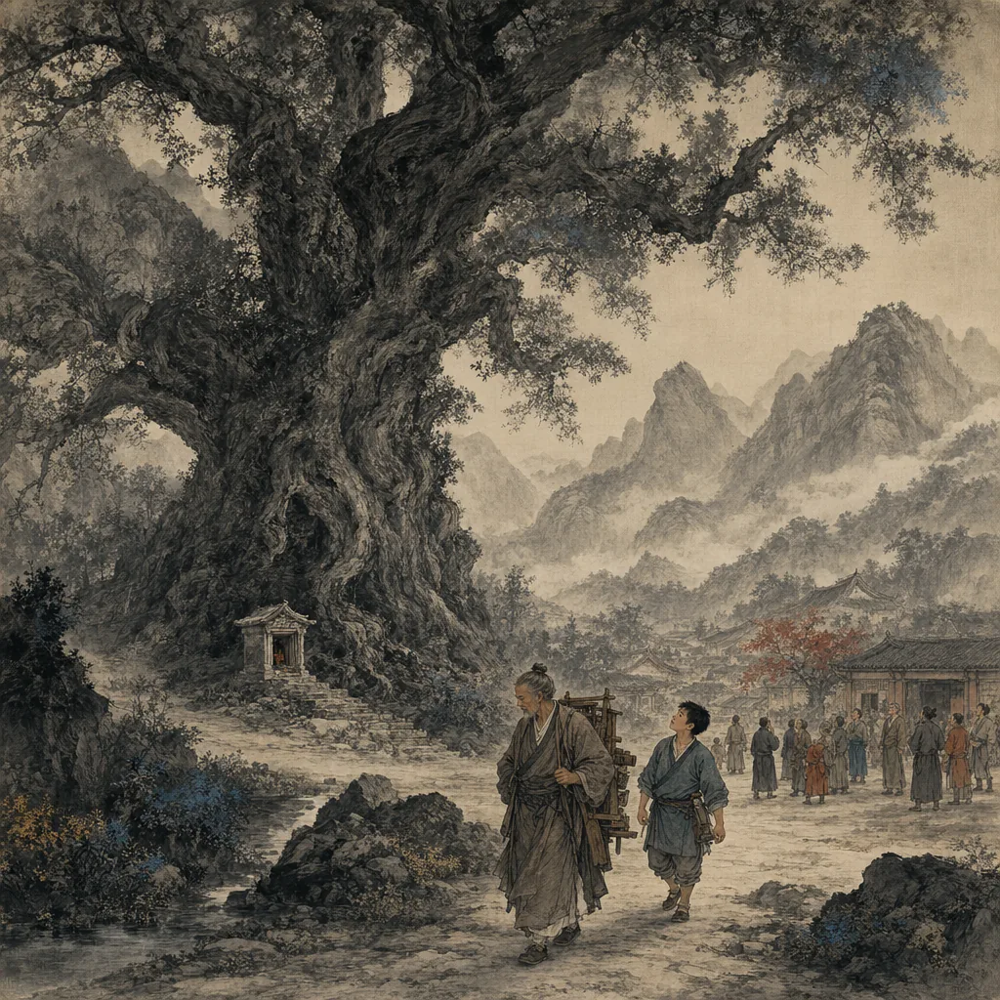
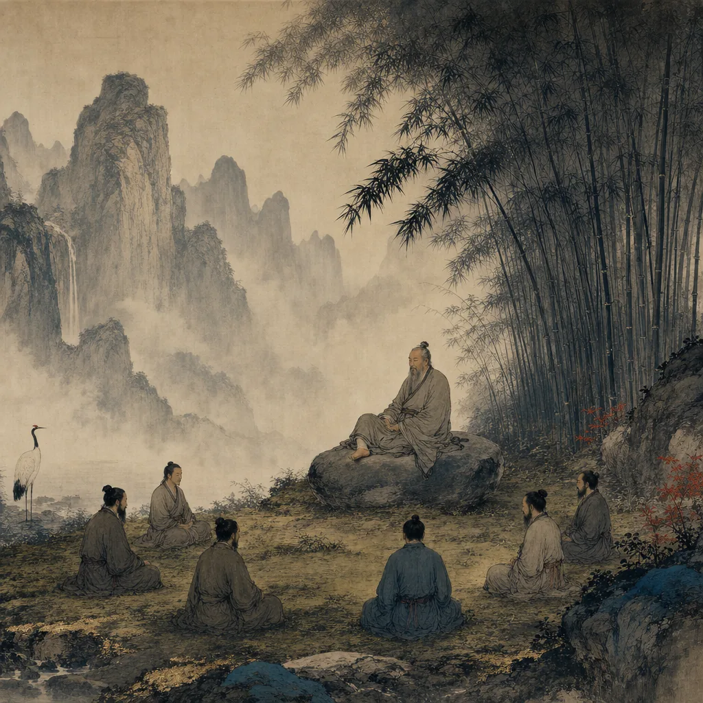
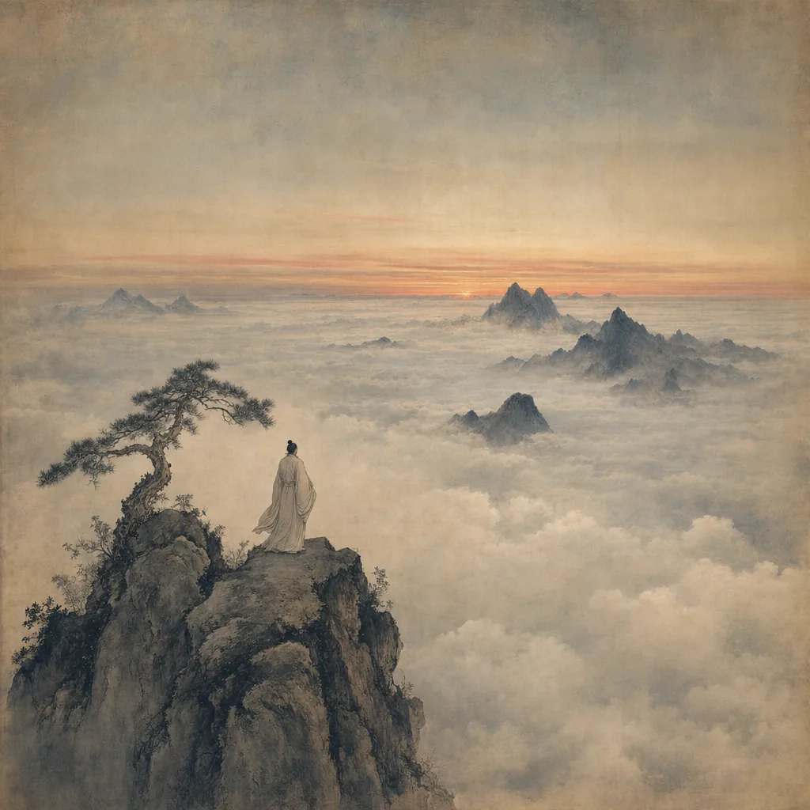
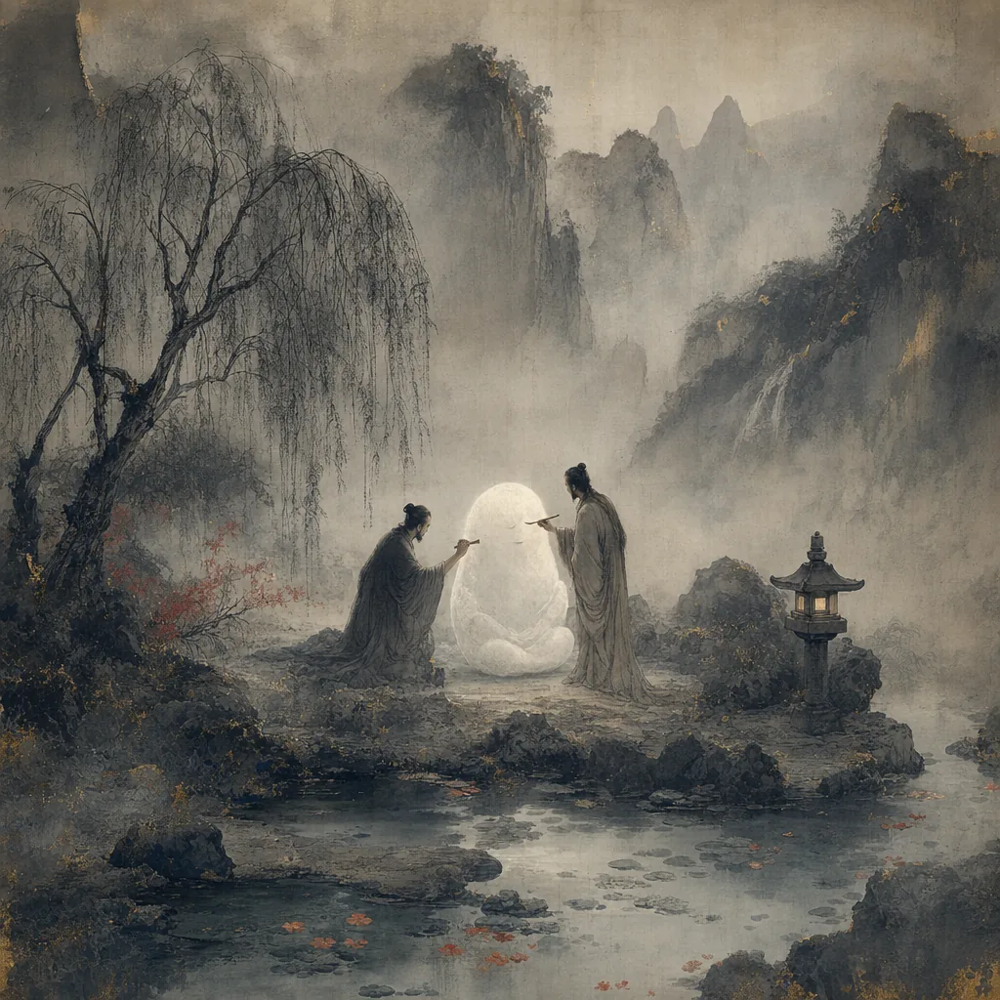

The Inner Chapters
Seven chapters of parable and paradox, considered the canonical core of the Daoist classic. The other twenty-six chapters of the received text are widely judged later additions; what follows is the work most likely to bear Zhuang Zhou's own hand.
逍遙遊
Free and Easy Wandering
In the dark waters of the northern ocean lives a fish called Kun. No one knows how many thousand miles it stretches.
Kun changes — its scales become feathers, its tail a great spreading sail — and rises from the sea as the bird Peng. A cicada and a small dove laugh from the bushes: what is all this talk of ninety thousand miles? But the cicada knows only the elm. To be free is not to fly far; it is to depend on nothing.
Hui Shi complains of a giant gourd, a knotted tree — both useless. Plant them in the village of Nothing-Whatever, Zhuangzi answers. No axe will come. Where is the trouble in being of no use?

齊物論
The Equality of Things
Today I have lost myself. Do you understand what that means?
Master Ziqi sits against his armrest, breathing slowly. He has heard the piping of men, and the piping of earth — wind through the great forest, every hollow giving its own cry — but the piping of heaven is something else. It blows on the ten thousand things, and each gives its own sound. Who is the one blowing?
Once Zhuang Zhou dreamed he was a butterfly, fluttering and content. Suddenly he woke. He was solidly Zhou again. But could he tell? Was Zhou dreaming the butterfly? Or the butterfly dreaming Zhou? This is the transformation of things.

養生主
The Secret of Caring for Life
I have used this blade for nineteen years. It has carved thousands of oxen. The edge is as fresh as if it just came off the whetstone.
Cook Ding works in rhythm with the dance of the Mulberry Grove. What I love, he says, is the Way. It goes beyond skill. He no longer sees the whole ox — he works with mind, not eyes. The joints have spaces. The blade has no thickness. To enter the spaces with no thickness leaves room to move freely.
Lord Wenhui hears him: I listened to my cook and learned how to live.

人間世
In the World of Men
Where is the trouble in being of no use?
A great oak stands at the village shrine. Carpenter Shi walks past without a glance. That tree is useless wood, he tells his apprentice. No boat, no coffin, no door. That night the oak comes to him in a dream. The cherry, the pear, the orange — when their fruit ripens, they are stripped, broken. Their gift kills them. I have spent my whole life trying to be useless. Now, near the end, I have it.
Crippled Shu lives long because no army wants him. The body crippled keeps its years. The man crippled in virtue may do better still.

德充符
The Sign of Virtue Complete
From the standpoint of difference, even the liver and gallbladder are as far apart as Chu and Yue. From the standpoint of sameness, the ten thousand things are one.
Wang Tai is missing a foot, yet his students rival Confucius's. He does not lecture. People come empty and leave full. He has located what is unborrowed in himself; he sees the missing foot as a clod of earth fallen from his shoe.
Ai-tai-tuo is so ugly he startles the world, yet men will not leave him and women beg to be his concubine. The signs are inward. When virtue is large, the body is forgotten.

大宗師
The Great and Venerable Teacher
The True Man breathes from the heels. Crowded men breathe from the throat.
The True Man of old slept without dreams and woke without worries. He did not cling to life or recoil from death. He arrived calmly. He departed calmly. Yan Hui makes progress: I have forgotten benevolence. Then ritual. Then I sit and forget — limbs and body fall away, hearing and sight go silent. I am one with the Great Open.
Sir Lai lies dying and his friend leans against the door. How great is the Maker of Things, the friend says. What will it make of you next? A rat's liver? An insect's leg?

應帝王
Fit for Emperors and Kings
All men have seven openings — to see, to hear, to eat, to breathe. Hundun has none. Let us bore him some.
The emperor of the South Sea was Light. The emperor of the North Sea was Sudden. The emperor of the Middle was Hundun, which means Chaos. They wanted to repay his hospitality. They bored one opening each day. On the seventh day, Hundun was no more.
Do not be eager to add to the world. The Way fills it already.
